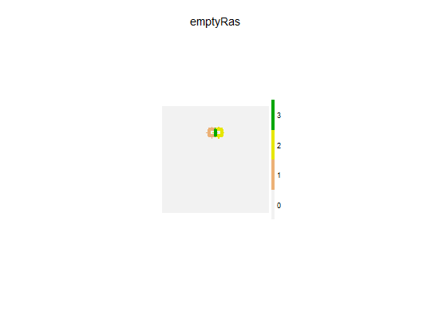
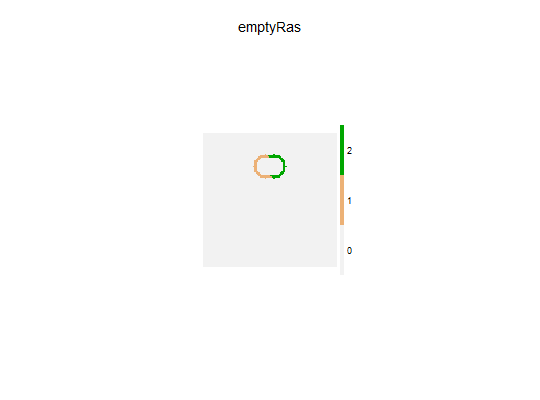
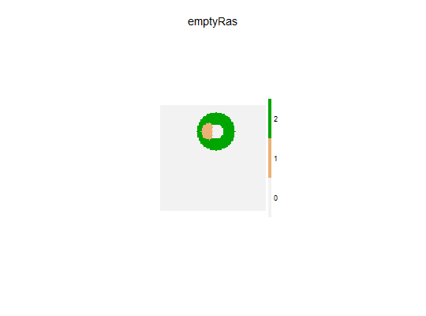

Identifies the cell numbers of all cells within a ring defined by minimum
and maximum distances from focal cells.
Uses spread under the hood, with specific values set.
Under many situations, this will be faster than using rgeos::gBuffer
twice (once for smaller ring and once for larger ring, then removing the
smaller ring cells).
rings(landscape, loci = NA_real_, id = FALSE, minRadius = 2, maxRadius = 5, allowOverlap = FALSE, returnIndices = FALSE, returnDistances = TRUE, ...) # S4 method for RasterLayer rings(landscape, loci = NA_real_, id = FALSE, minRadius = 2, maxRadius = 5, allowOverlap = FALSE, returnIndices = FALSE, returnDistances = TRUE, ...)
A RasterLayer object. This defines the possible
locations for spreading events to start and spread into.
This can also be used as part of stopRule.
A vector of locations in landscape.
These should be cell indices.
If user has x and y coordinates, these can be converted
with cellFromXY.
Logical. If TRUE, returns a raster of events ids.
If FALSE, returns a raster of iteration numbers,
i.e., the spread history of one or more events.
NOTE: this is overridden if returnIndices is TRUE.
Numeric. Minimum radius to be included in the ring.
Note: this is inclusive, i.e., >=.
Numeric. Maximum radius to be included in the ring.
Note: this is inclusive, i.e., <=.
Logical. If TRUE, then individual events can overlap
with one another, i.e., they do not interact (this is slower
than if allowOverlap = FALSE).
Default is FALSE.
Logical. Should the function return a data.table
with indices and values of successful spread events, or
return a raster with values. See Details.
Logical. Should the function include a column with the
individual cell distances from the locus where that event
started. Default is FALSE. See Details.
Any other argument passed to spread
This will return a data.table with columns as described in
spread when returnIndices = TRUE.
cir which uses a different algorithm.
cir tends to be faster when there are few starting points, rings
tends to be faster when there are many starting points. Another difference
between the two functions is that rings takes the centre of the pixel
as the centre of a circle, whereas cir takes the exact coordinates.
See example.
rgeos::gBuffer
library(raster) library(quickPlot) # Make random forest cover map emptyRas <- raster(extent(0, 1e2, 0, 1e2), res = 1) # start from two cells near middle loci <- (ncell(emptyRas) / 2 - ncol(emptyRas)) / 2 + c(-3, 3) # Allow overlap emptyRas[] <- 0 rngs <- rings(emptyRas, loci = loci, allowOverlap = TRUE, returnIndices = TRUE) # Make a raster that adds together all id in a cell wOverlap <- rngs[, list(sumEventID = sum(id)), by = "indices"] emptyRas[wOverlap$indices] <- wOverlap$sumEventID if (interactive()) { clearPlot() Plot(emptyRas) }# No overlap is default, occurs randomly emptyRas[] <- 0 rngs <- rings(emptyRas, loci = loci, minRadius = 7, maxRadius = 9, returnIndices = TRUE) emptyRas[rngs$indices] <- rngs$id if (interactive()) { clearPlot() Plot(emptyRas) }# Variable ring widths, including centre cell for smaller one emptyRas[] <- 0 rngs <- rings(emptyRas, loci = loci, minRadius = c(0, 7), maxRadius = c(8, 18), returnIndices = TRUE) emptyRas[rngs$indices] <- rngs$id if (interactive()) { clearPlot() Plot(emptyRas) }